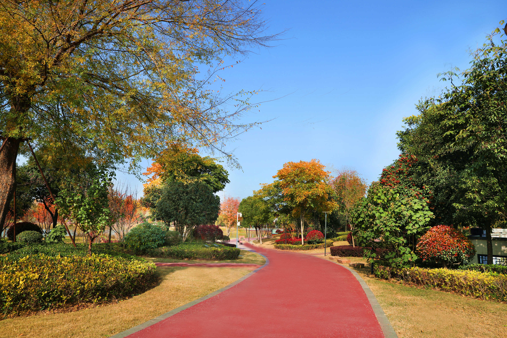
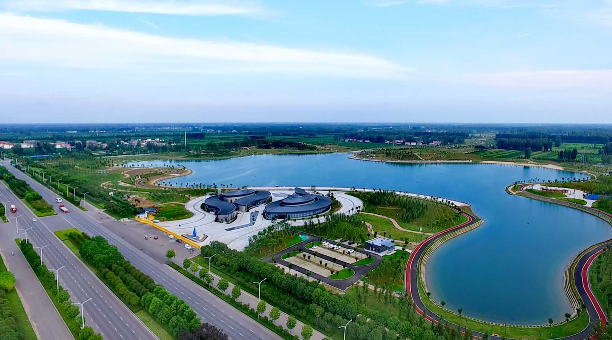
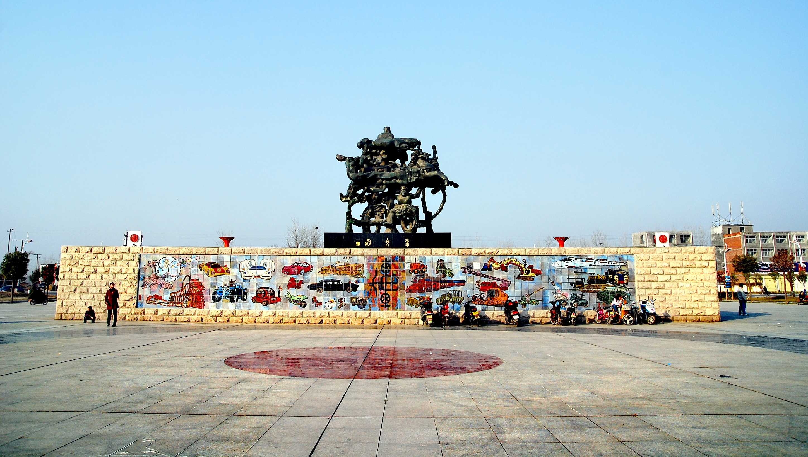
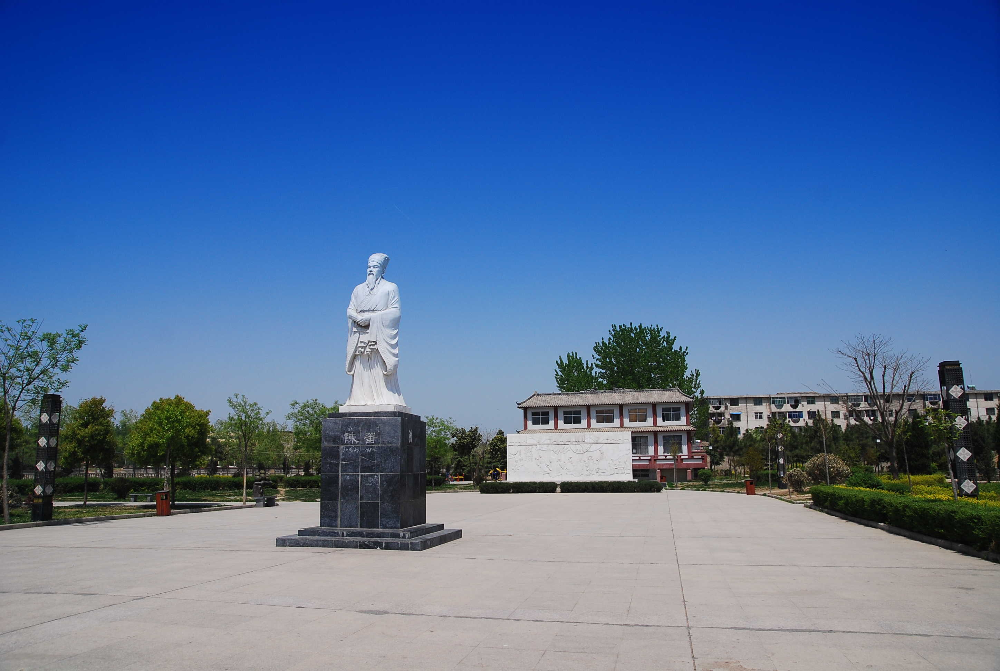

平舆风光 - 自然与人文的交融
这里有秀美的自然风光，也有深厚的人文古迹，每一处都值得细细品味

蓝天芝麻小镇
蓝天芝麻小镇是国家4A级旅游景区，以白芝麻产业为核心，融合了休闲农业、乡村旅游、民俗文化等多种元素。景区内有千亩芝樱园、白芝麻科技馆、民俗体验园等景点，春季芝樱盛开，夏季绿树成荫，是休闲度假的好去处。

清河公园
清河公园位于平舆县城东部，是平舆县最大的城市公园，总面积达1000余亩。公园以清河为轴线，两岸绿树成荫，亭台楼阁错落有致，设有健身步道、儿童乐园、亲水平台等设施，是市民休闲健身、观光游览的重要场所。

挚湖湿地公园
挚湖湿地公园是国家级湿地公园，位于平舆县西部，总面积5000余亩。公园内水域广阔，芦苇丛生，是众多鸟类的栖息地，设有观鸟台、湿地栈道、科普馆等景点，生态环境优美，是感受自然、科普教育的理想之地。

奚仲公园
奚仲公园以“造车鼻祖”奚仲为主题，位于平舆县城北部。公园内有奚仲雕像、造车文化广场、历史长廊等景点，展现了奚仲造车的历史传说和平舆的悠久文化。公园环境清幽，是了解平舆历史文化的重要窗口。

陈蕃公园
陈蕃公园纪念东汉名臣陈蕃（平舆人），位于平舆县城中部。公园内有陈蕃雕像、“一屋不扫，何以扫天下”主题雕塑、廉政文化长廊等景点，弘扬了陈蕃刚正不阿、勤政廉政的精神。公园布局精巧，文化氛围浓厚。

太任公园
太任公园以周室三母之一的太任为主题，位于平舆县城南部。太任是周文王的母亲，以贤德闻名。公园内有太任雕像、贤德文化广场、亲子乐园等景点，展现了太任的贤德故事和中华传统美德。公园是亲子游玩、感受传统文化的好去处。